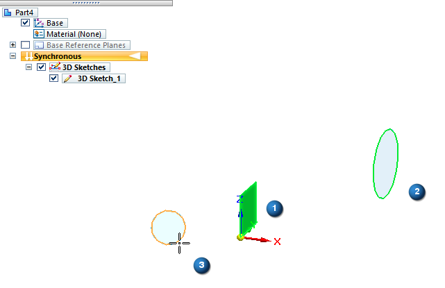
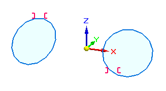

Symmetric command (3D Sketching)
Use the 3D Sketching tab→3D Relate group→Symmetric command  to make elements symmetric about a reference plane.
to make elements symmetric about a reference plane.
The position and size of the first element you select are adjusted to be symmetrical with the second element selected.

The red symmetry relationship handles are displayed on the elements where the relationship is applied:

The characteristics of the elements on each side of the symmetry plane, such as size and position, are maintained by the relationship.
How do I
Lock an element or keypointApply a rigid set relationship to 3D sketch elements
Make elements symmetric in a 3D sketch
Learn more
3D IntelliSketchLook up more details
3D IntelliSketch Options commandRelationship Handles command (3D sketching)
Maintain Relationships command (3D sketching)
Relationship Colors command
Connect command (3D Sketching)
Parallel command (3D Sketching)
Concentric command (3D Sketching)
On Plane command (3D Sketching)
Horizontal Vertical command (3D sketching)
Equal command (3D Sketching)
Perpendicular command (3D Sketching)
Lock command (3D Sketching)
Rigid Set command (3D Sketching)
Tangent command (3D Sketching)
Coaxial command (3D Sketching)
Collinear command (3D Sketching)